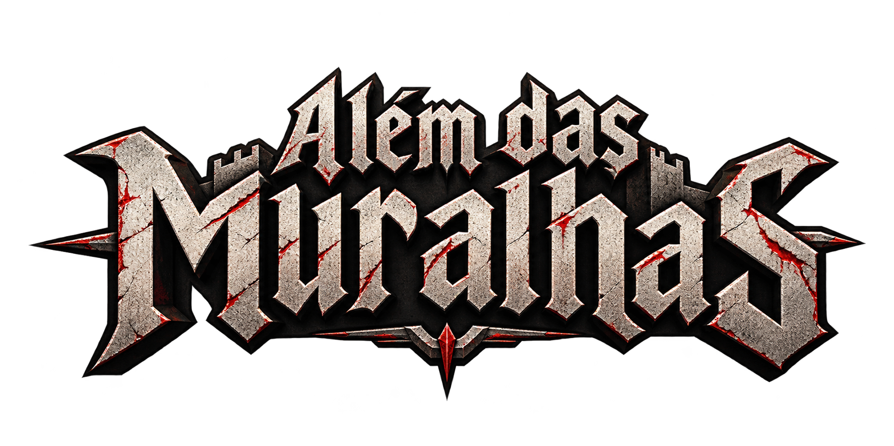
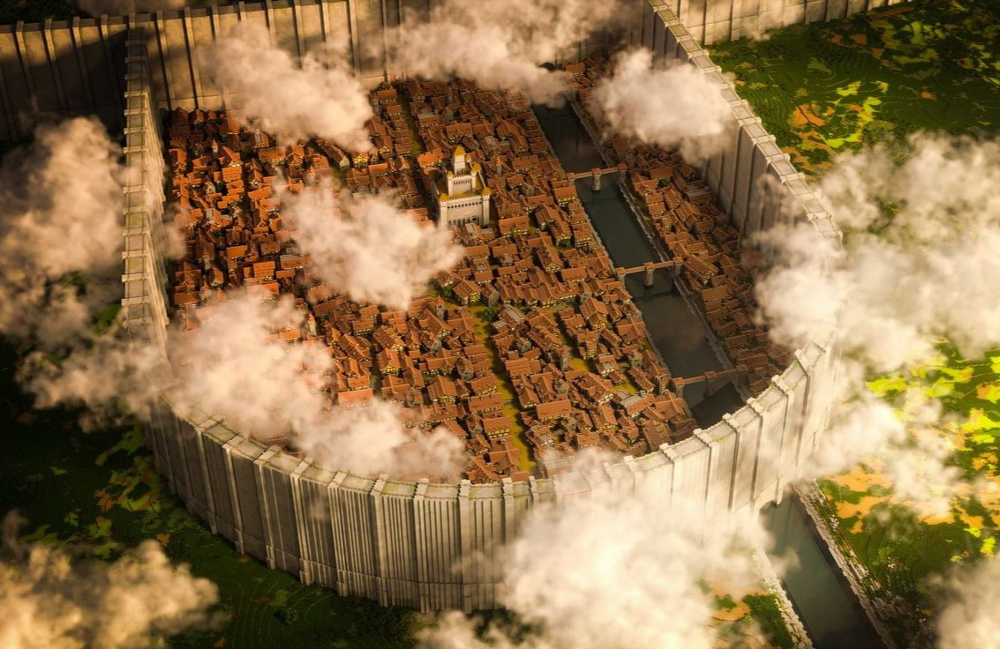
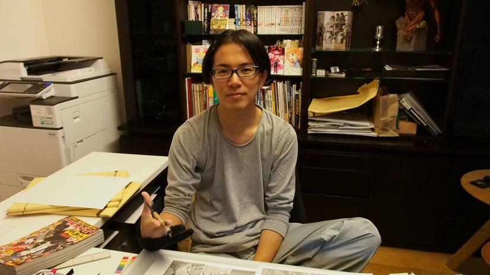
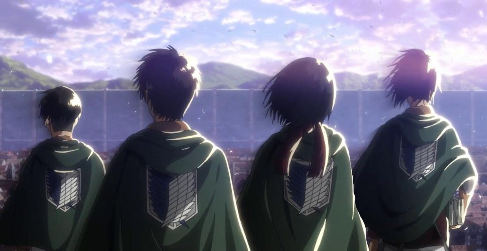

Shingeki no Kyojin foi criado por Hajime Isayama. A obra começou como um mangá e conquistou leitores ao apresentar uma história que, inicialmente, parecia ser apenas sobre a luta da humanidade contra os Titãs.

O que começa como uma luta pela sobrevivência, se desenvolve de forma cada vez mais complexa. A cada descoberta, novos conflitos, escolhas e perspectivas transformam completamente a maneira como enxergamos esse mundo.
Além da ação e dos mistérios, Shingeki no Kyojin aborda temas como liberdade, escolhas, perdas, preconceitos e diferentes perspectivas. São reflexões que tornam a obra marcante muito além de seus conflitos.
Para mim, Shingeki no Kyojin não é apenas um anime. É uma obra que me apresentou diferentes formas de enxergar o mundo e me fez refletir sobre valores, escolhas, amizades, liberdade e crescimento.
Nesta página, compartilho um pouco mais sobre a minha relação com a obra e os valores que fazem parte da minha história.